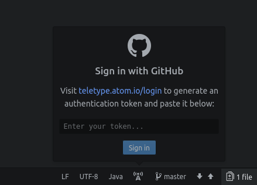

Remote Tutoring
Before joining remote tutoring, you must install
the Atom text editor
, and then the
teletype package
Open Teletype by clicking the Teletype logo as shown. Follow the brief instructions to finish configuring Teletype.

Tutoring is available in
Chris's Zoom meeting room.